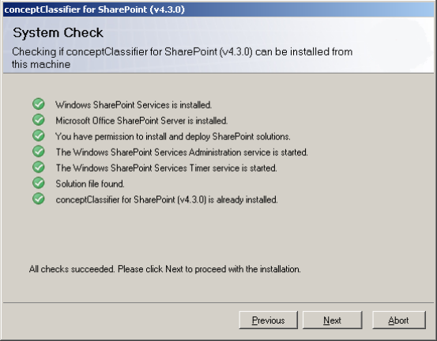
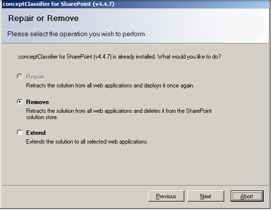
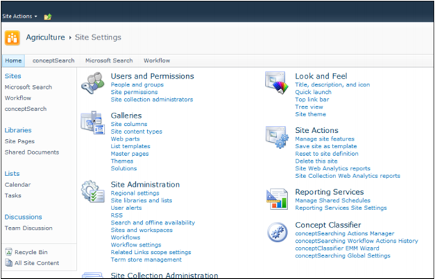
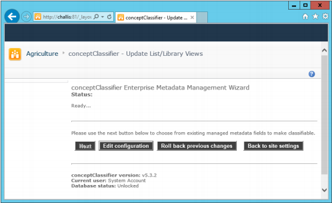
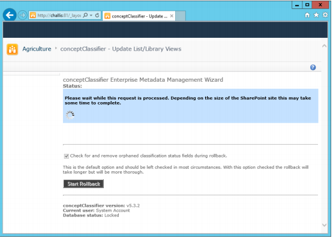
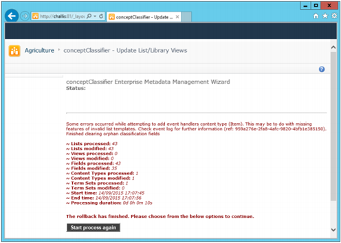
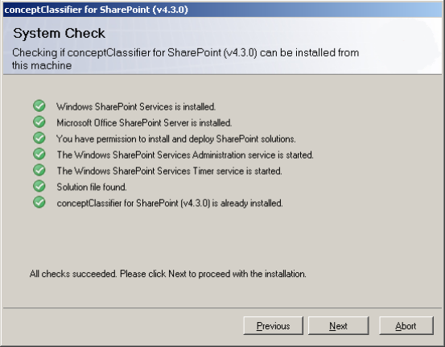
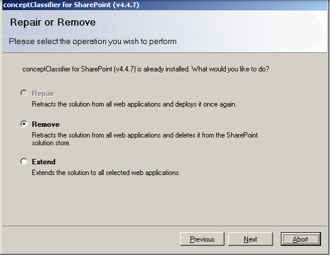

To remove conceptClassifier for SharePoint cleanly you must perform two steps:
DO NOT remove the conceptClassifier Solution from SharePoint Central Admin.

Select the Remove option to remove the Solution:

- Roll Back the installation using the conceptClassifier Wizard
- Run the conceptClassifier SETUP utility and select the “Remove” option.
DO NOT remove the conceptClassifier Solution from SharePoint Central Admin.
Roll Back the Installation
-
Select the “conceptClassifier EMM Wizard” from the Site Settings area of
SharePoint:
- 
-
You will see the following screen:
- 
- Click the “Roll back previous changes” button to perform the Rollback.
-
Click “Start Rollback” to confirm the procedure. You will then see a screen like
this:
- 
- This will remove all of the conceptClassifier site columns and event handlers installed when the Wizard was first run.
-
The final screen should look like this:
- 
Remove the Solution
To remove the Solution run the original conceptClassifier SETUP routine and the existing Solution should be detected:
Select the Remove option to remove the Solution:
